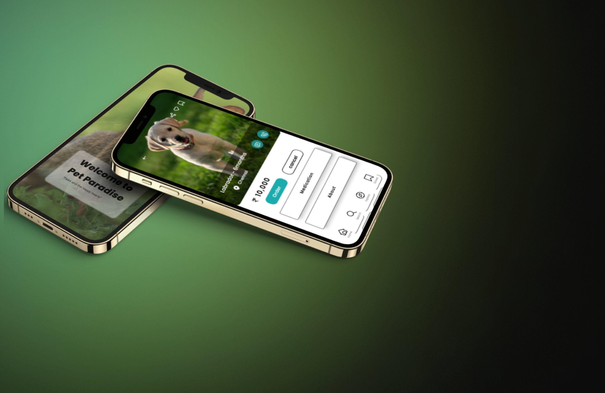

Pet Paradise
“ Connecting Hearts, Finding Homes ”
seamlessly control and monitor all your compatible devices from one
intuitive interface.
TIMELINE
Oct - Nov 2023
ROLE
SECTOR
Pet Industry
UX Research, Userflow, User Personas, wireframe, UI Design, UX Design